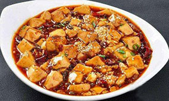
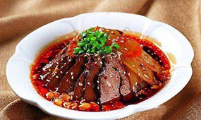
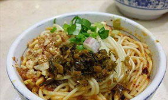

川菜介绍
川菜三派的划分，是在已有定论的上河帮，小河帮，下河帮的基础上，规范化完整表述为:上河帮川菜即以川西成都、乐山为中心地区的蓉派川菜； 小河帮川菜即以川南自贡为中心的盐帮菜, 同时包括宜宾菜、泸州菜和内江菜 ；下河帮川菜即以重庆江湖菜、万州大碗菜为代表的重庆菜。三者共同组成川菜三大主流地方风味流派分支菜系，代表川菜发展最高艺术水平。2017年9月28日，眉山被中国烹饪协会授予“川厨之乡”的称号，眉山菜成为川菜的代表。
川菜取材广泛，调味多变，菜式多样，口味清鲜醇浓并重，以善用麻辣调味著称，并以其别具一格的烹调方法和浓郁的地方风味，融会了东南西北各方的特点，博采众家之长，善于吸收，善于创新，享誉中外。四川省会成都市被联合国教科文组织授予“世界美食之都”的荣誉称号。
近现代川菜兴起于清代和民国两个时间段，并在新中国成立后得到创新发展。川菜以家常菜为主，高端菜为辅，取材多为日常百味，也不乏山珍海鲜。其特点在于红味讲究麻、辣、鲜、香；白味口味多变，包含甜、卤香、怪味等多种口味。代表菜品有鱼香肉丝、宫保鸡丁、水煮鱼、水煮肉片、夫妻肺片、辣子鸡丁、麻婆豆腐、回锅肉、东坡肘子和东坡肉等，其他经典菜品有：棒棒鸡、泡椒凤爪、灯影牛肉、廖排骨、口水鸡、香辣虾、尖椒炒牛肉、四川火锅、麻辣香水鱼、板栗烧鸡、辣子鸡等。
产品
- 
- 
- 